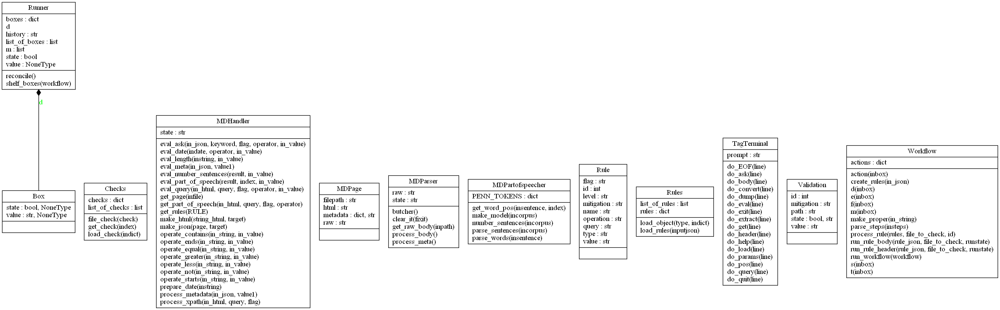
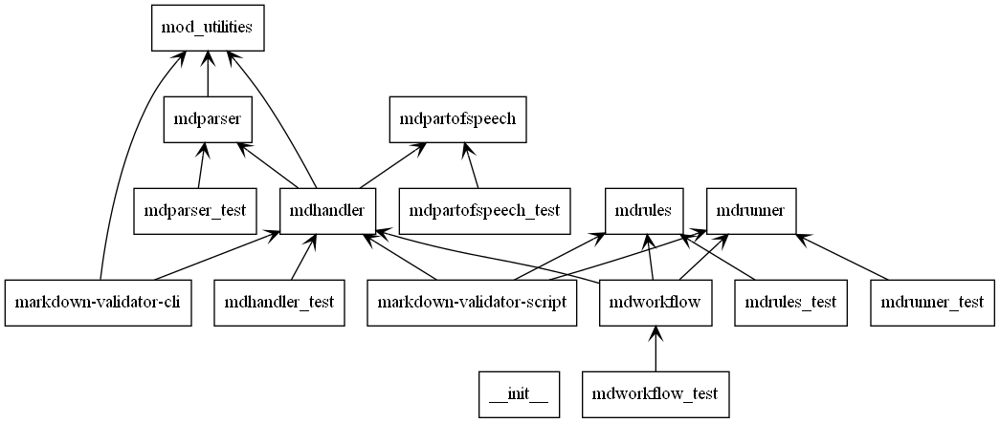

About the design of the validator¶
The tool should allow for on-demand and programmatic assessment of documents using a document-based format for describing the rules that make up a particular document type. That is, the rules apply to the document can be keyed from metadata such as a document type. The rules can be applied both on demand and can produce a validation report on a file or repository. Both the on-demand and batch process produce an overall summary validation status of pass/fail or true/false.
Each validation error should produce: * Pass fail state for the document. * Pass fail state for the validation item. * A mitigation description. * A location for the validation failure.
 